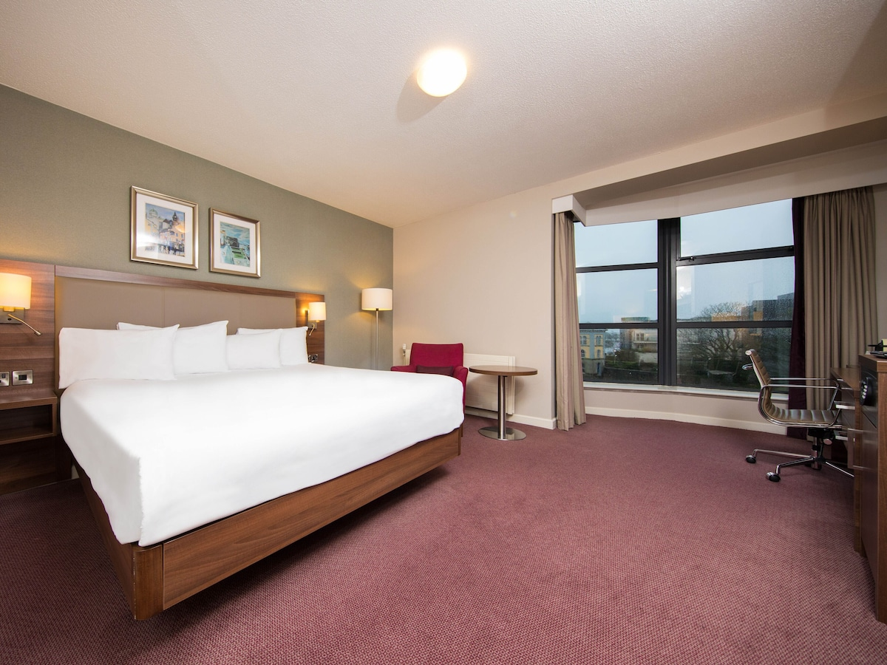

In Dublin
Hilton Garden Inn Dublin City Centre
Set in a busy area overlooking the River Liffey, this low-key hotel is a 4-minute walk from a tram stop, less than 1 km from the live shows at 3Arena and 3 km from Dublin Castle. The hotel has a restaurant, gym, wifi, bar, parking, a business center, air conditioning in all rooms, rooms with 1 bathroom. More information and Evaluation.
 Back To Top
Back To Top
In Galway
Jurys Inn Galway
The hotel is located right next to the River Corrib and close to the boardwalk, restaurants and shops. Allows you to enjoy the main places. The hotel has a restaurant, gym, wifi, bar, parking, and each room varies between 1 and 2 bathrooms. More Information and Review.


 Back To Top
Back To Top
In Cork
Radisson Blu Hotel & Spa
Set on 4 hectares, this upscale hotel is 6 miles from the lush Wildlife Park and 19.3 km from Blarney Castle, a medieval building. The hotel has a restaurant, gym, wifi, swimming pool, bar, spa, parking, room with 1 bathroom. More information and review.
Back To Top